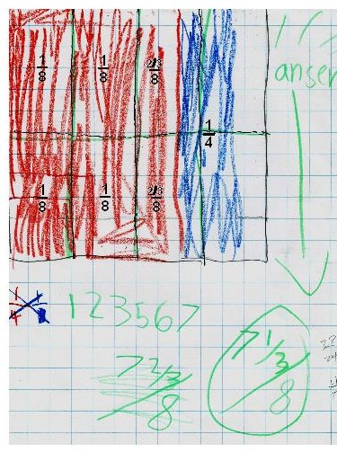

Ann-Emily, 2nd grader, adds fractions using complex fractions and multiplies mixed numbers-WOW!
Don gave Ann-Emily the problem 2/3 + 1/4 = ? He walked away to work with other students. When he came back, he saw this picture (without 1/8 and so on in black print which he put in after to help him and other people understand what she did).
Ann-Emily explained the picture to Don (as he remembered it): The whole is a 12x12 square. The red section is 2/3 of that. The blue part is 1/4 of it.

The 3 vertical rows at the
left, make up 1/4 of the whole. Half of 1/4 is 1/8. So she counted 4/8 for the 4
sections. Looking at the 2 red vertical rows to the right, that was 2/3/8
(2/3 of an 8th) on top and 2/3/8
on the bottom. Ann-Emily added the 1/8's to get the red total: 1/8 + 1/8 + 1/8 +
1/8 + 2/3/8
+ 2/3/8
= 4/8 + 4/3/8
= 4/8 + 1 1/3/8
=
5 1/3/8
([5 and 1/3] eighths).
The blue section is 1/4 = 2/8, so the total 2/3 + 1/4 = 7 1/3/8
(on the right above), which was her answer. Don was really impressed with Ann-Emily's use of complex
fractions. He checked her answer
for himself, by
changing the complex fraction to a
simple fraction by multiplying top and bottom by 3 to get 22/24 = 11/12. Then he
looked at her picture and got 11/12 also.
Ann-Emily multiplies 3 1/2 x 2 1/3
See her picture below: First she did 3 1/2 x 2 = 7, then 3 x 1/3 = 1, then 1/2 x 1/3 = 1/6, then added these to get 8 1/6. Simple!
Fine job Ann-Emily!